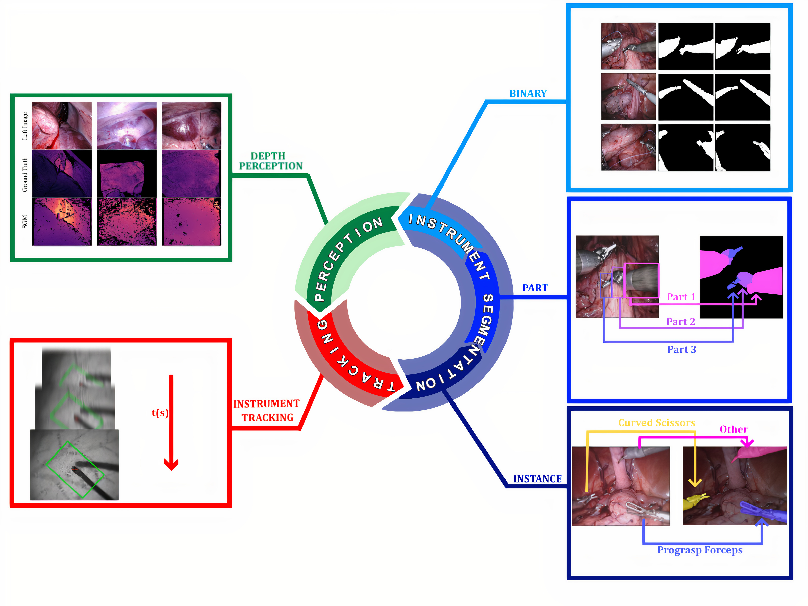
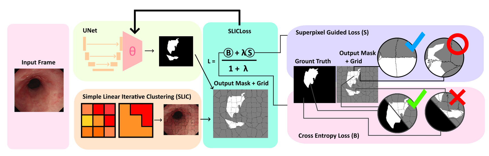
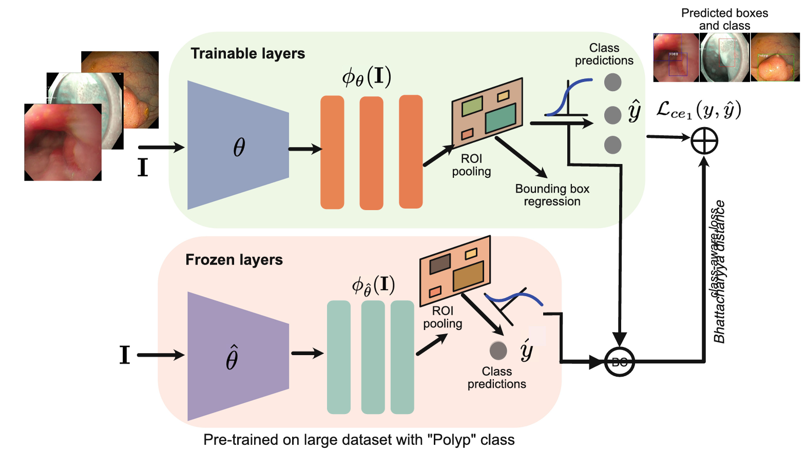
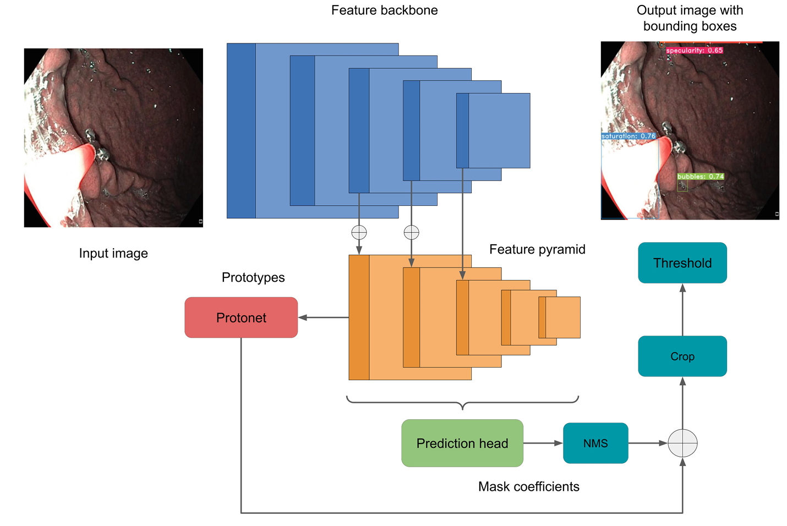
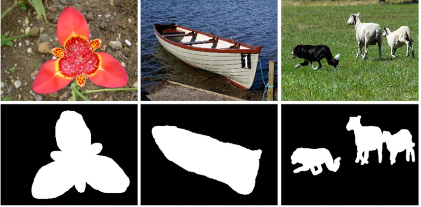
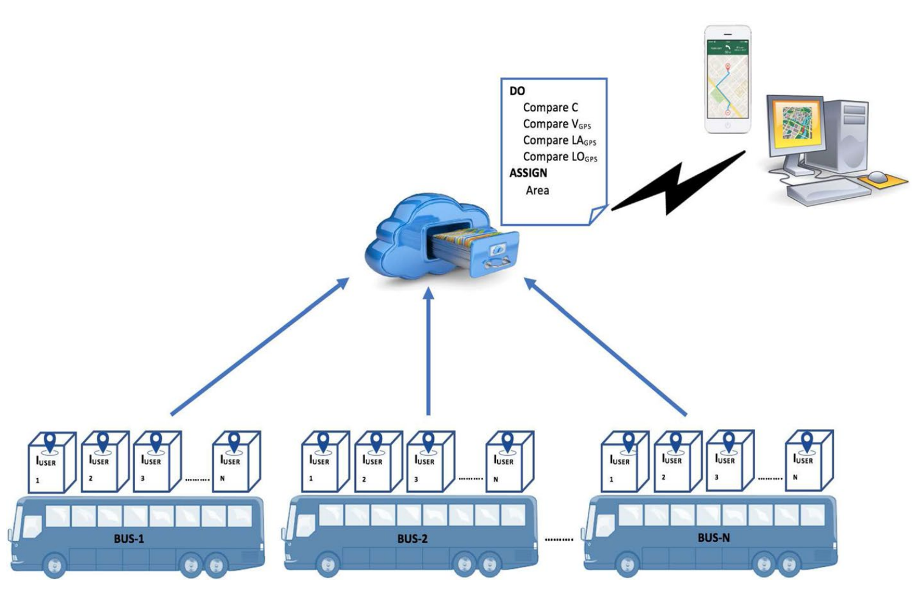
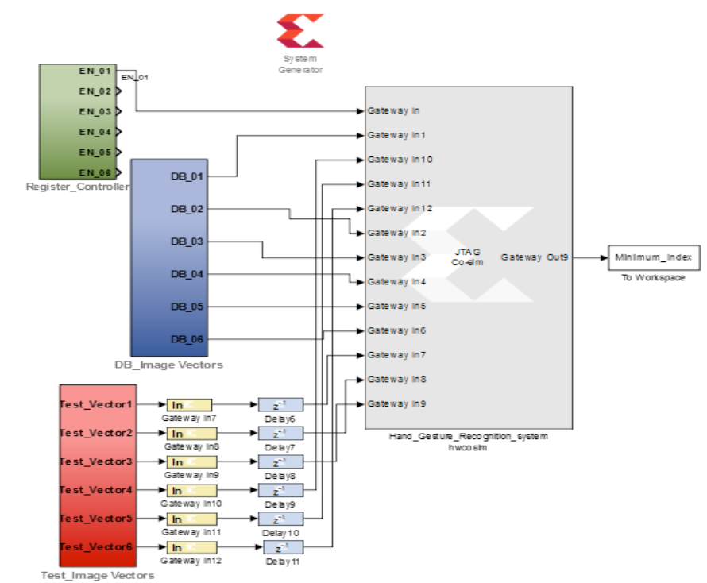

Dec, 2022 - 1st Ph.D paper gets published in TCIV.
Nov, 2022 - Won first prize among all postgrad programs in a research competetion 'My investigation' @ TEC.
Oct, 2022 - Attended MICAI 20222 in-person at Monetrrey, Mexico.
Oct, 2022 - Presented an extended abstract at LatinX in AI @ ECCV 2022.
Oct, 2022 - Participated in Doctoral consortium at LatinX in AI @ ECCV 2022.
Sep, 2022 - Became MICCAI student society member for the first time.
Sep, 2022 - Attended MICCAI 2022 in-person at Singapore, presented paper and two posters.
Aug, 2022 - One paper gets accepted to MICAI 2022.
Aug, 2022 - One paper gets accepted to AE-CAI Workshop @ MICCAI 2022.
July, 2022 - Attended Summer School at UCL. Worked on a project Augmented Reality for Surgery (BARD).
June, 2022 - One paper gets accepted to CaPTion Workshop @ MICCAI 2022.
June, 2022 - Successfully defended my Ph.D research proposal.
Aug, 2021 - Started my Ph.D at Tec de Monterrey!
Intro
I am a second year PhD student at Technologico de Monterrey, Mexico. I am advised by Dr.
Gilberto Ochoa-Ruiz and Dr.
Sharib Ali.
My PhD research is about developing novel deep learning methods for minimally invasive surgery and surgical perception.
I completed my masters from Mehran University of Engineering and Technology Pakistan. I was advised by Dr.
Tayab Din Memon. My thesis was focused on FPGA hardware implementation of gesture recognition algorithms.
I worked as a lecturer, Electronic Engineering at Mehran University of Engineering and Technology Pakistan from 2013 to 2020. In this position,
I was involed in teaching undergraduate courses related to Electronics Engineering.
My current research interests are Deep learning, Computer vision, Medical image analysis, Computer-assisted interventions and Image-guided surgery.
[CV].
Research
2022
A semi-supervised Teacher-Student framework for surgical tool detection and localization Mansoor Ali, Gilberto Ochoa-Ruiz, Sharib Ali.
Computer Methods in Biomechanics and Biomedical Engineering: Imaging & Visualization, Dec 2022
Augmented Reality, Augmented Environments for Computer Assisted Interventions(AE-CAI) Workshop @ MICCAI'22 Singapore (Oral) [paper][code]

Comprehensive survey on recent deep learning-based methods applied to surgical data Mansoor Ali, Rafael Martinez Garcia Pena, Gilberto Ochoa-Ruiz, Sharib Ali.
arXiv, 2022. [paper]

SUPRA: Superpixel Guided Loss for Improved Multi-modal Segmentation in Endoscopy
Rafael Martinez Garcia Pena, Mansoor Ali, Gilberto Ochoa-Ruiz, Sharib Ali.
arXiv, 2022. [paper]

Knowledge Distillation with a Class-Aware Loss for Endoscopic Disease Detection
Pedro E. Chavarrias-Solano, Mansoor Ali, Gilberto Ochoa-Ruiz, Sharib Ali.
Cancer Prevention through early detecTion (CaPTion) Workshop @ MICCAI'22 Singapore.
Lecture Notes in Computer Science book series (LNCS,volume 13581) [paper]

Improving Artifact Detection in Endoscopic Video Frames Using Deep Learning Techniques
Pedro E. Chavarrias-Solano, Mansoor Ali, Gilberto Ochoa-Ruiz, Sharib Ali.
Proceedings of Mexican International Conference on Artificial Intelligence (MICAI'22) @ Monterrey, Mexico. [paper]

Object detection and segmentation by composition of fast fuzzy C-mean clustering based maps
Mehmood Nawaz, Rizwan Qureshi, Mansoor Ali, Ali Raza Shahid.
Journal of Ambient Intelligence and Humanized Computing, Jan, 2022. [paper]
2019

Crowdsource Based Vehicle Tracking System
Sundas Metlo, Mahnoor Gul Memon, Faisal Karim Shaikh, Mansoor Ali
Wireless Personal Communications, April 2019. [paper]
2018

Area-performance-power analysis of hand gesture recognition system in FPGA Mansoor Ali, Tayab D Memon, Shoaib Hassan Khaskheli, Sahrish Memon.
Proceedings of 2018 International Conference on Computing, Mathematics and Engineering Technologies (iCoMET) Pakistan. [paper]